Andrew's Blog
Andrew's Blog


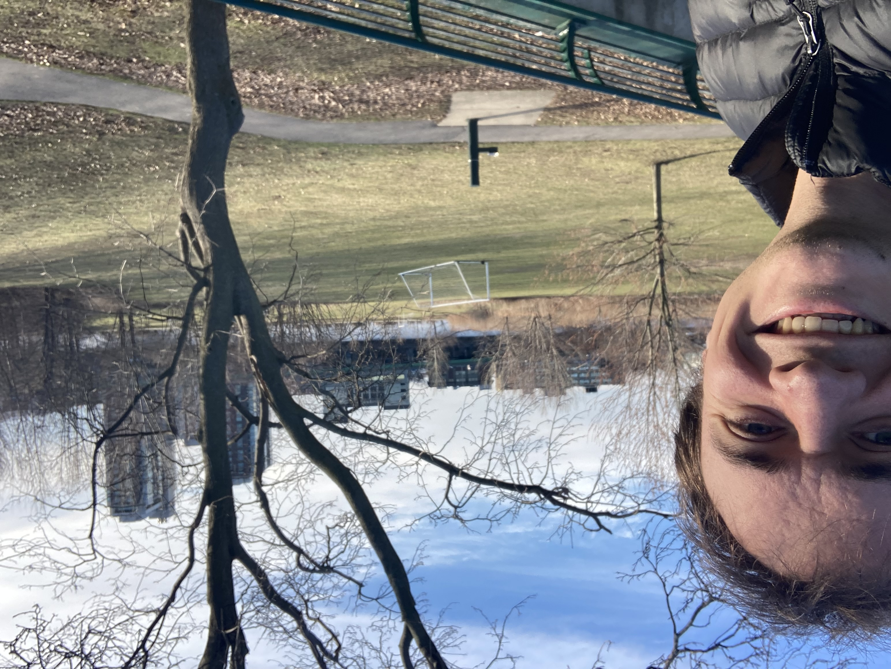
If flâneur wasn't already a cool enough word, we have an even more exciting word this month - palimpsest.
A palimpsest is traditionally a page, such as from a book or scroll, that has been erased or washed for reuse. This is more of an old timey thing when people were using parchment (tanned animal skin) instead of paper. But from an city perspective it has been used to describe the layers of human civilization. Things like buildings built on old foundations, land or water modified to make it suitable for human habitats, and roads overlaying old trails. This month we are looking for something where we live and asking the question: why is it like that?
A few blocks from where I live is a large park called Magazine Beach. However, when I go there I see neither a beach nor a magazine. So I have a few questions I want to solve...
As I investigated these questions, it revealed there are a lot of layers to this place. Colonial defenses, an 1800s powder house, bath houses, highway protests, and finally a nice new park. Oh my!
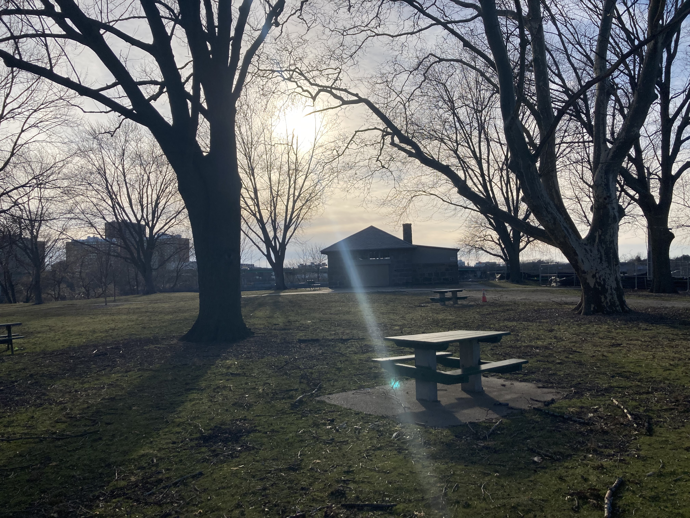
Prior to colonial involvement, this part of Cambridge Massachusetts was a marshy salt-water estuary. In the 1600's the Massachusetts Bay Company gifted a small "island" (can you really call a hill in a marsh an island?) to Captain Daniel Patrick, a Massachusetts' militia leader and former Dutch solider. Captain Patrick was tasked with building fortifications, training militia, and other defensive measures in the Massachusetts Bay Colony. But, as far as I can tell, he didn't do that... The island remained undeveloped and it seems Captain Patrick moved out of Cambridge only a couple years after arriving...
I do find it worth noting, if this person's genealogy blog is to be believed, Captain Patrick was a philanderer and was killed after spitting on a dutchman during a debate. So, a bit of a controversial historical figure. Nevertheless, as the first (colonial) owner of this land, it became known as Captain's Island.
The island passed between many owners over the following century until it was sold to the Commonwealth in 1818. A gunpowder magazine was built and operated on the island until 1863. The structure was already in decay by the 1860s but the residential neighborhood growing closer led residents to push back on having a highly explosive store so close by.
Here is the powder house today. The foundation remains the same.
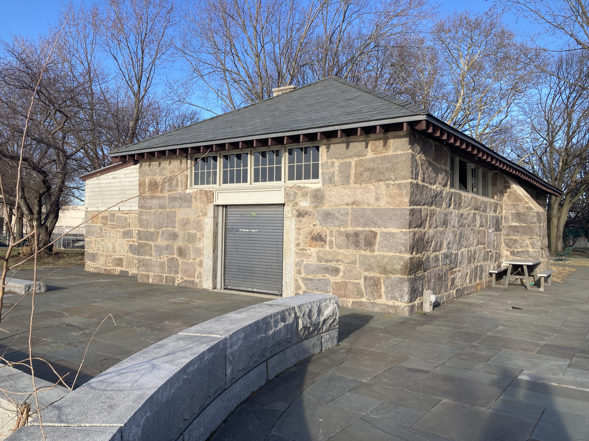
This Magazine was an important building for old Cambridge. One of the major streets in the area is even named after it. Magazine Street is one of the only 2-way streets in the neighborhood!
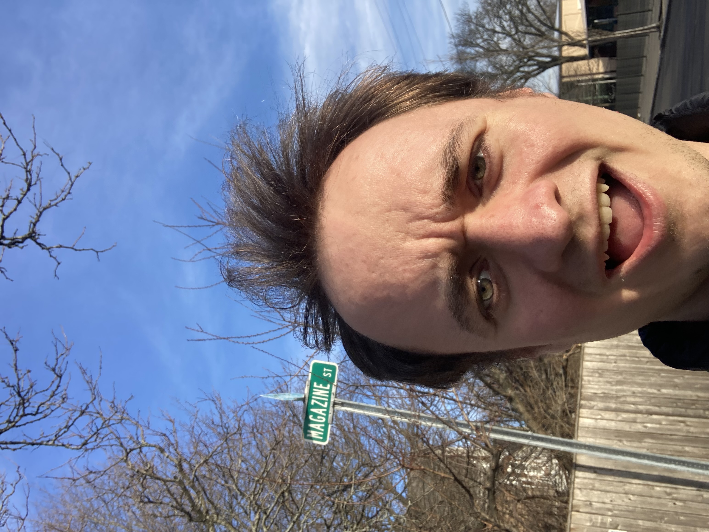
That's our answer to question 1, we've found the magazine. But we're still a marshy mound of dirt. Where is the beach?
The Commonwealth of Massachusetts let the magazine fall into disuse. The roof caved in and the structure was abandoned. The city of Cambridge looked into purchasing the land to make a park, but the state sold it to private owners. These owners continued to leave it in disrepair. Right before the turn of the 20th century, the city did obtain the land through eminent domain. In the late (18)90s Cambridge contracted the local architectural landscaping firm, the Olmstead Brothers, to begin filling in the marshland and converting the powder house into a public bath house.
Coincidentally, there is an old framed map of Cambridgeport in the entry way to my apartment building. I am not sure what year it is from, but it shows the bath houses! Men's, women's, and boy's. Not sure where the girls were supposed to go...
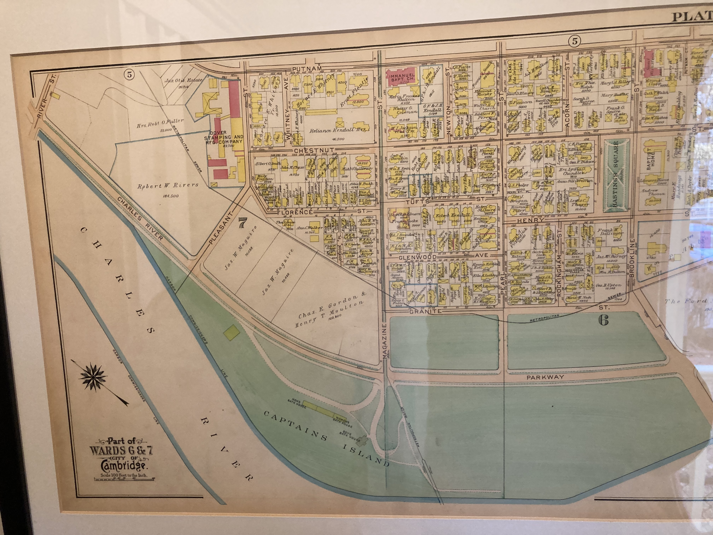
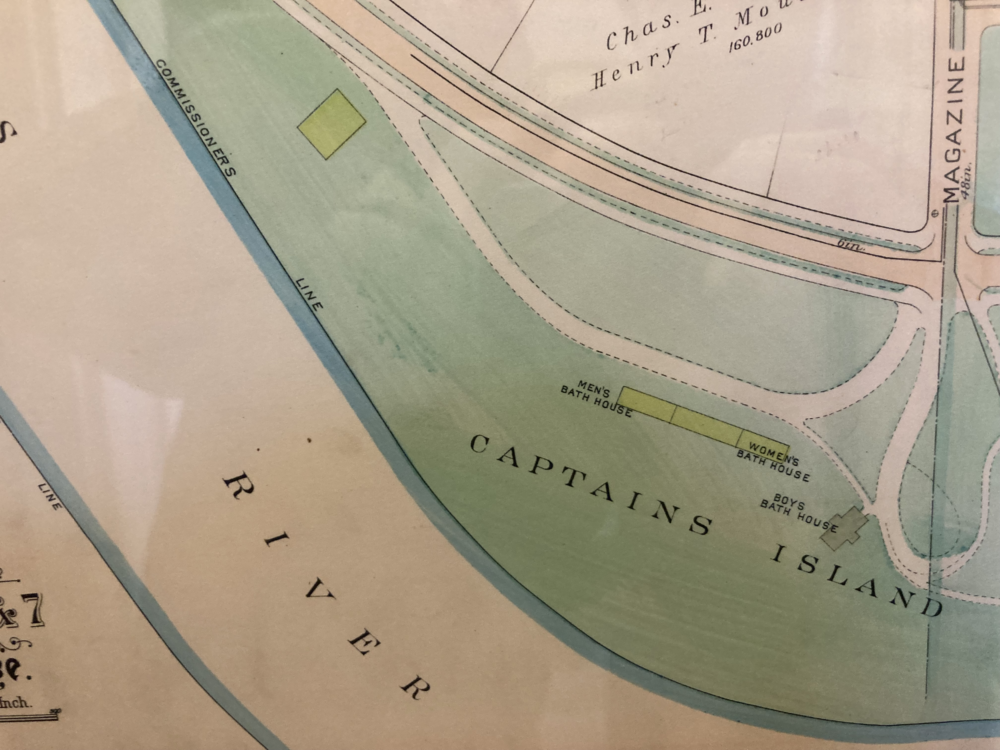
Unlike the affluent residential Cambridgeport of today, in the early 20th century, Cambridgeport was full of factories and their workers. The public baths and beaches were a popular way for workers and their families to clean and cool down.
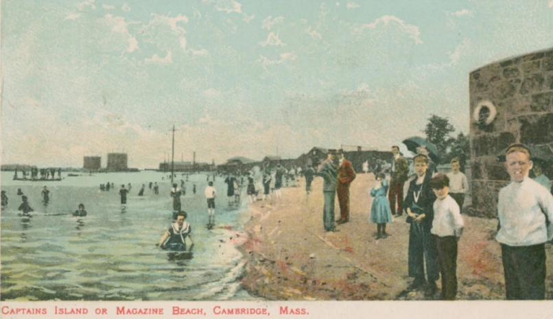
Unfortunately, the joys were short lived. Up until then, the river was a salt-water estuary. But in 1910, a dam was built (and later replaced in the 70s) that turned the river into a freshwater body. This meant less tidal flushing resulting in increased sewage and factory contamination. Algae blooms that could only grow in fresh water became more prevalent. People started to think swimming here might not be such a good idea. The city agreed and by 1950 the beach was closed due to pollution concerns in the water.
Without the swimmers, the bath house was converted into storage and offices for the Metropolitan District Commission responsible for sewers and drinking water in the Boston area.
Today, efforts are being made to clean up the river. Extra "relief sewers" were added along the river to help fight sewage overflow during storms, most factories have closed in the area, and although it isn't safe to swim year round, once per year (if conditions are deemed clean enough) a small portion of the river at the site where Magazine Beach used to be, is opened for swimming. They call it the City Splash. I hope to swim in it this year. Maybe it will be a clean enough river to swim in all year someday.
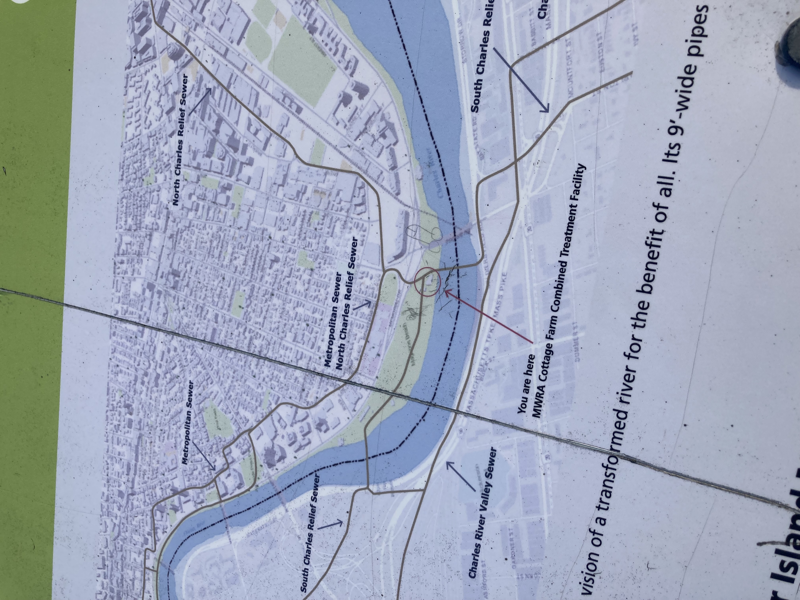
I am going to get angry now.
After World War II something was happening in America that would reshape and destroy a lot of historic cities, the construction of major highways.
I'm already fuming.
Cities were reshaped to make room for cars and traffic and allow "easier" access for the rapidly growing suburban neighborhoods. Cambridge and Boston were no exception. In 1955, a massive 6 lane highway, i695, was planned to cut through Boston and the neighboring cities. The plan would have cut through many residential neighborhoods and displaced at least 7000 people. In fact, it would have crushed my apartment, or at least its back yard!
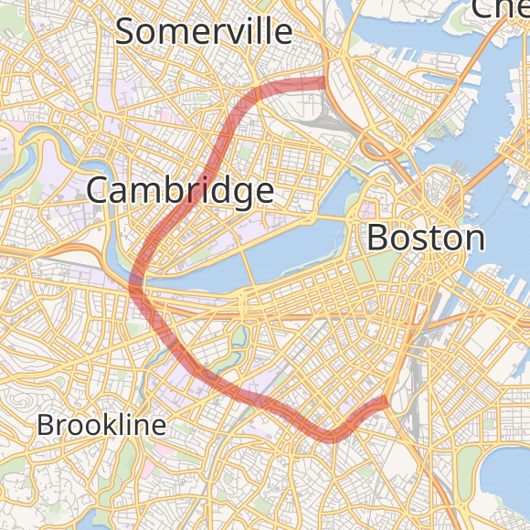
Construction began and, in the 1960s, an array of community movements organized to stop the development.
In Cambridge, three city planners Tunney Lee, Fred Salvucci, and Dennis Blackett created the "Cambridge Committee on the Inner Belt". This group criticized the project and provided information to residents. A popular Catholic priest in the area, Father Paul McManus, joined forces with the committee to rally more residents. (As an aside, this guy was the oldest priest in Boston, working until he died at 100 years old in 2016). By 1966, the anti-highway activists convinced the Cambridge City Council to stand against the highway as well, making Cambridge the first of the impacted cities to officially fight back.
In Roxbury, the most impacted neighborhood in Boston, the Black United Front organized protests against this inner belt highway and racial justice issues. All these groups banded together under the name Urban Planning Aid (UPA). Their activism culminated in a 1969 protest called People Before Highways. This effectively killed the construction efforts, as now the Massachusetts State House was against the project, but the project did not officially die until 1971.
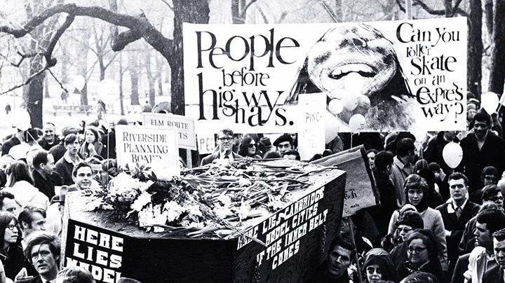
This victory is celebrated by anti-highway activists today. It is discussed in the book People Before Highways by Karilyn Crockett. Cities like Rochester NY, Charlotte NC, and Hartford CT built innerbelts around the same time that resulted in urban decay. I see a mural of this victory on my walk to Trader Joe's every week.
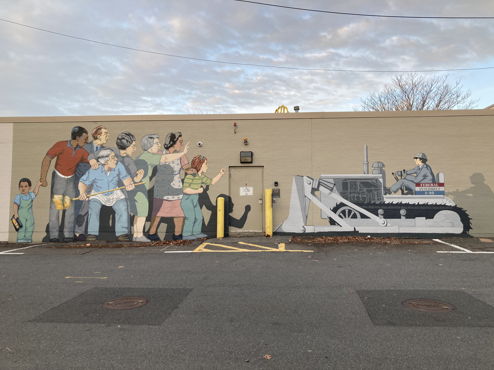
I really like this mural. The little boy is so interesting too, he looks so conflicted as he holds his toy construction vehicle as the adults stop the development.
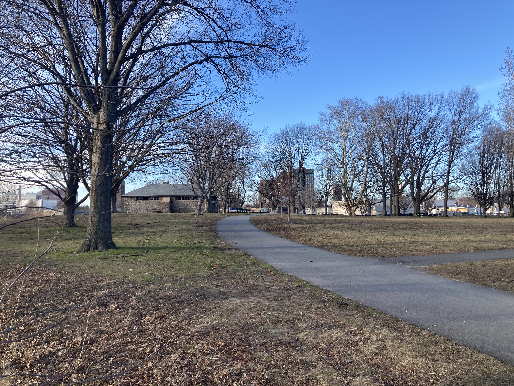
And now here we are in the 21st century. I like this quote from the Magazine Beach Committee of the Cambridgeport Neighborhood Association:
Today, instead of soap, biscuit, candy, lantern and telescope factories, we have biotech and high tech companies. But the need remains: we all need “breathing spaces” to relax and revitalize along the river.
After the beach closures in the fifties, the area did not actually reopen to public use until very recently! In 2003, a plan was designed in 3 phases to revitalize the land into a park. It seems like it is more work than that though, as currently we are in phase 2-II... In 2009, recreational fields were built. By 2018, canoe and kayak launch sites were added. In 2021, the Powder House was turned into a little community center with nature and history exhibits. River observation decks and docks are being added in the current phase. There is a little outdoor fitness area as well where I like to do pull ups. In the future, there are potential plans to build pedestrian footbridges connecting this park to the Allston landing park on the Boston side of the river. Lots of fun stuff!
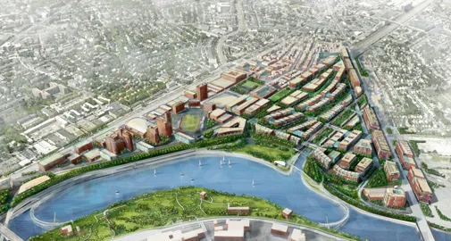
Lucky for me, the New England snow has melted and I had a nice walk around the park. Here are some photos I took and things I saw.
Is this a beach or just a river bank? What is the difference? You can see some of the phase 2-II work here too.
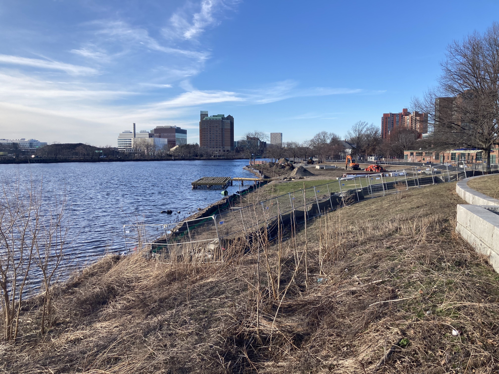
When I visited the park there were a lot of folding chairs set up facing the water. The geese seemed to like them more than people.
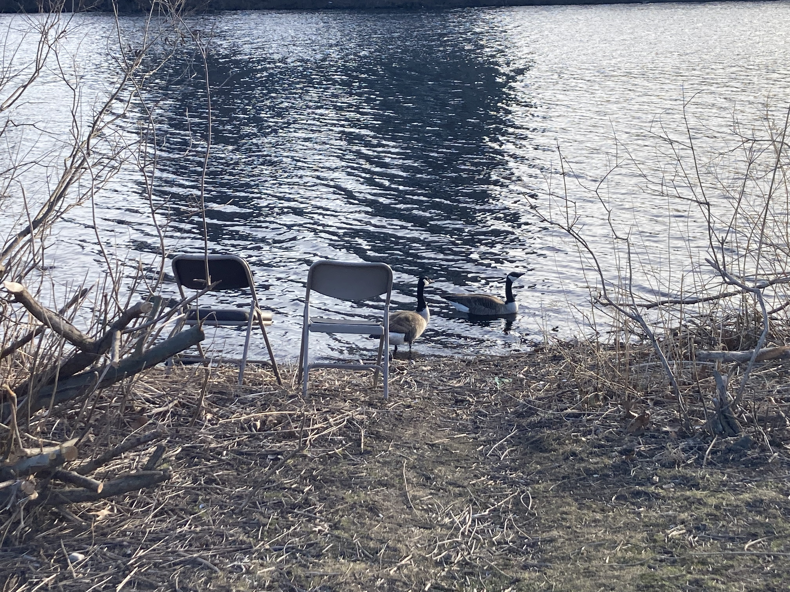
There's a nice view of the BU Bridge and some train tracks. I bike over that on my commute everyday!
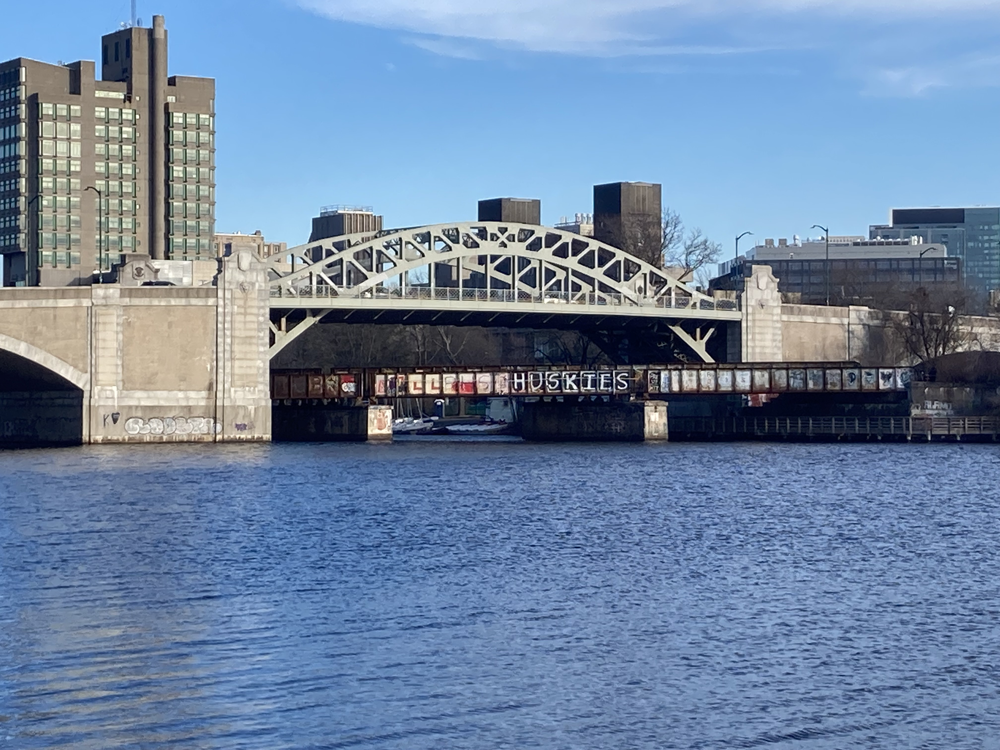
Here's a view of the recreational fields and some marshy plants. The filled in land is quite salty and results in the field draining poorly and large plants like trees not wanting to grow.
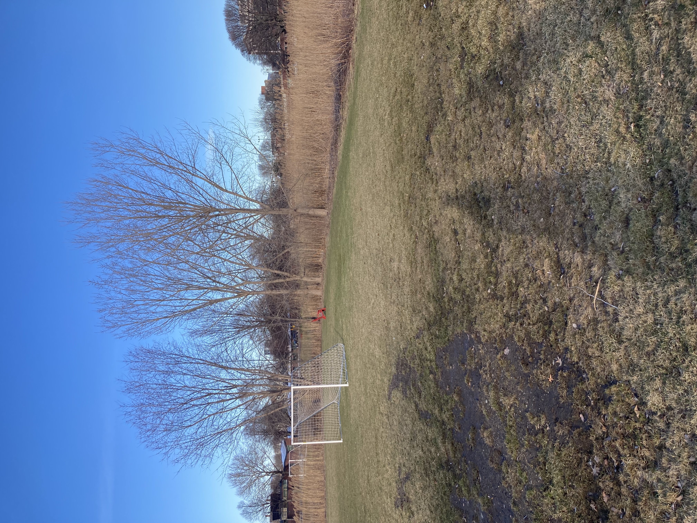
A fort, a beach, a bath, and a park. It is cool to see how this land has evolved over the years and it's fun to be part of the active changes now.
Subscribe to the RSS Feed to see more flâneur content!